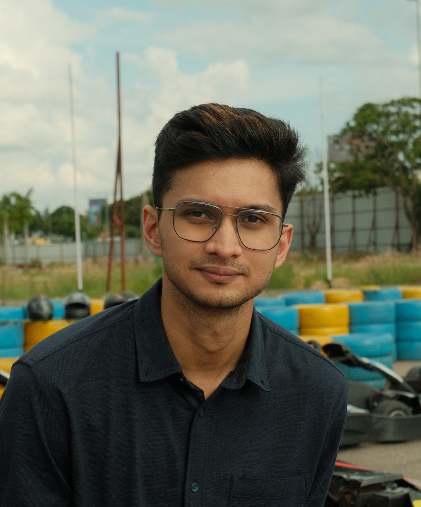

Aniket Dash
Machine Learning · Data · Music Production
My work aims to develop multimodal AI systems that learn from images, language, and sound to create more natural and connected intelligence.
News
- Sep 2025 — New edition on Geophonic : Getting Started with LangGraph, Ollama and Agentic workflows.
- Sep 2025 — Deployed ChangeSense v2 with automated CI/CD using Docker and GitHub Actions.
- Aug 2025 — New edition on Geophonic : Understanding Cloud Native Geospatial Data
- June 2025 — New edition on Geophonic : Mapping the Politics of Water
Recent Projects
ResearchGraph is an AI-powered research assistant that helps users explore and classify academic papers and generate summaries using LLMs and NLP techniques.
[Code]
- Retrieval Augmented Generation (RAG)
- LangGraph